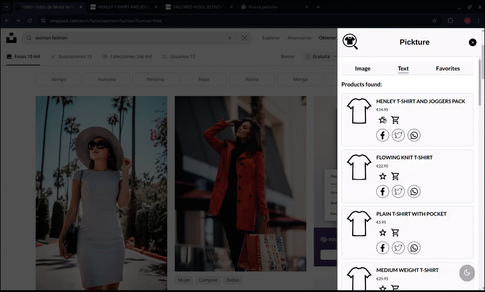
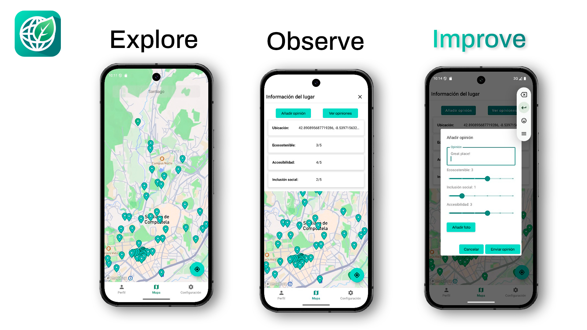

Martín González Dios

Computer engineer focused on cybersecurity.
About me
Computer Engineering student with a focus on cybersecurity. I actively participate in CTFs and hackathons, with experience in penetration testing and basic exploit development. My training is continuous, combining university studies with self-directed learning. At university, I have acquired solid knowledge in operating systems, networks, databases, APIs, and other essential subjects that complete the education of a computer engineer, providing me with a strong foundation. In parallel, through self-study, I enhance my knowledge in cybersecurity and network administration using platforms such as Hack The Box and through various technical certifications.
I am passionate about open source; most of the tools I use daily are FOSS. I primarily work with Arch Linux in my development environment and use Debian for servers. My preferred code editor is Neovim, it's the one I use most and the one I feel most comfortable with.
Education
- High School Diploma in Science - IES Frei Martín Sarmiento and IES Xunqueira I (2021-2023)
- Bachelor's Degree in Computer Engineering - University of Santiago de Compostela (2023-present)
Certifications
-
LPIC-1 (11/2025): since I began my career, Linux has always been fundamental to me; it is the de facto operating system I have been using for years. This was one of the reasons why I decided to learn it in depth, which led me to prepare for and obtain the Linux Professional Institute Certification 1. Thanks to this certification, I delved deeper into technologies such as systemd, the use and management of Red Hat distributions, Linux server hardening, and many other areas.

-
Cisco Certified Support Technician Cybersecurity (CCST Cybersecurity) (10/2025): as a result of completing this certification, I gained a practical and theoretical overview of cybersecurity: threat identification and assessment, incident response workflows, and network security principles. As my first certification, it helped me consolidate a foundation in the field and provided my first exposure to services, devices, and configurations within the Cisco ecosystem.

-
Advanced cybersecurity in operational technology environments (09/2025): I have always been interested in the intersection between the development world and the industrial world, and this course allowed me to learn how to proceed when managing a current industrial environment, with everything that entails.
Projects
Pickture

Pickture is a Google Chrome extension oriented towards searching and discovering clothing items online. The tool allows identifying products similar to those in a selected image on any website and offers purchasing alternatives from Inditex group brands.
For the operation of this project we use the Visual Search Inditex Tech API, an open source tool that Inditex provides to search for similar garments. To provide a persistent menu between sessions we use IndexedDB. This project was developed during the HackUDC 2025 Hackathon, it was the winner of the Inditex challenge.
Technologies: JavaScript, IndexedDB and Visual Search Inditex Tech API.
GreenDots

GreenDots is a mobile application for Android that allows searching for sustainable venues on an interactive map, you can create reviews of the venues based on different criteria.
The application is developed entirely in Kotlin, using a REST API built with Spring Boot for the backend and PostgreSQL for the database. This project was developed during USC's Impacthon 2025, placing second in the technical projects section.
Technologies: Kotlin, Java, Spring Boot, PostgreSQL and REST API.
Look for the Capy

Look for the Capy is a game developed in C++ that uses OpenGL 3.3 to create procedural 3D terrain using Perlin noise. The goal of the game is to find a capybara across the terrain as many times as possible. Keep in mind that if you take too long to find it, you will lose the game.
Technologies: C++, OpenGL 3.3 and GLSL.
Martín González Dios
Ingeniero informático orientado a la ciberseguridad.
Acerca de mí
Estudiante de Ingeniería Informática, orientado al campo de la ciberseguridad. Participo activamente en CTFs y hackathons, con experiencia en pruebas de intrusión y desarrollo de exploits básicos. Mi formación es continua, combinando los estudios universitarios con el aprendizaje autodidacta. En la universidad he adquirido conocimientos sólidos en sistemas operativos, redes, bases de datos, APIs y otras materias esenciales que completan la formación de un ingeniero informático. Esto me ha proporcionado una base sólida. Paralelamente, de forma autodidacta profundizo en ciberseguridad y administración de redes mediante plataformas como Hack The Box o a través de diversas certificaciones técnicas.
Soy un apasionado del open source; la mayoría de las herramientas que utilizo a diario son FOSS. Trabajo principalmente con Arch Linux en mi entorno de desarrollo y empleo Debian para servidores. Mi editor de código predilecto es Neovim, es el que más uso y en el que más cómodo me siento.
Educación
- Bachillerato de Ciencias - IES Frei Martín Sarmiento e IES Xunqueira I (2021-2023)
- Grado en Ingeniería Informática - Universidad de Santiago de Compostela (2023-presente)
Certificaciones
-
LPIC-1 (11/2025): desde que comencé mi carrera, Linux ha sido siempre fundamental para mí; es el sistema operativo de facto que utilizo desde hace años. Esta fue una de las razones por las que decidí aprenderlo en profundidad, lo que me llevó a preparar y obtener el Linux Professional Institute Certification 1. Gracias a esta certificación, ahondé en tecnologías como systemd, el uso y gestión de distribuciones Red Hat, el hardening de servidores Linux y muchas otras áreas.
-
Cisco Certified Support Technician Cybersecurity (CCST Cybersecurity) (10/2025): como resultado de completar esta certificación, adquirí una visión práctica y teórica en ciberseguridad: identificación y evaluación de amenazas, flujos de trabajo de respuesta a incidentes y principios de seguridad de redes. Al ser mi primera certificación, me ayudó a consolidar una base en el campo y me proporcionó mi primer acercamiento a los servicios, dispositivos y configuraciones dentro del ecosistema de Cisco.
-
Ciberseguridad avanzada en entornos de las tecnologías de la operación (09/2025): siempre he estado interesado en la intersección entre el mundo del desarrollo y el mundo industrial, y este curso me permitió aprender cómo hay que proceder a la hora de manejar un entorno industrial actual, con todo lo que conlleva.
Proyectos
Pickture
Pickture es una extensión para Google Chrome orientada a la búsqueda y descubrimiento de prendas de ropa en línea. La herramienta permite identificar productos similares a los de una imagen seleccionada en cualquier sitio web y ofrece alternativas de compra de marcas del grupo Inditex.
Para el funcionamiento de este proyecto usamos la API Visual Search Inditex Tech, una herramienta open source que Inditex facilita para poder buscar prendas similares. Para proporcionar un menú persistente entre sesiones usamos IndexedDB. Este proyecto se realizó durante el Hackathon HackUDC 2025, fue el ganador del reto Inditex.
Tecnologías: JavaScript, IndexedDB y Visual Search Inditex Tech API.
GreenDots
GreenDots es una aplicación móvil para Android que permite la búsqueda de locales sostenibles en un mapa interactivo. Algunas de sus funcionalidades son crear reseñas de los locales basados en diferentes criterios o consultar las opiniones de diferentes usuarios.
La aplicación está desarrollada completamente en Kotlin, utilizando una API REST construida con Spring Boot para el backend y PostgreSQL para la base de datos. Este proyecto fue desarrollado durante el Impacthon 2025 de la USC, quedando segundo en el apartado de proyectos técnicos.
Tecnologías: Kotlin, Java, Spring Boot, PostgreSQL y API REST.
Look for the Capy
Look for the Capy es un juego desarrollado en C++ que utiliza OpenGL 3.3 para crear un terreno 3D procedimental usando ruido de Perlin. El objetivo del juego es encontrar una capibara a lo largo del terreno todas las veces que sea posible. Ten en cuenta que si tardas demasiado en encontrarla, perderás el juego.
Tecnologías: C++, OpenGL 3.3 y GLSL.
Martín González Dios
Enxeñeiro informático orientado á ciberseguridade.
Acerca de min
Estudante de Enxeñaría Informática, orientado ao ámbito da ciberseguridade. Participo activamente en CTFs e hackathons, con experiencia en probas de intrusión e desenvolvemento de exploits básicos. A miña formación é continua, combinando os estudos universitarios coa aprendizaxe autodidacta. Na universidade adquirín coñecementos sólidos en sistemas operativos, redes, bases de datos, APIs e outras materias esenciais que completan a formación dun enxeñeiro informático. Isto proporcionoume unha base sólida. En paralelo, de maneira autodidacta afondo na ciberseguridade e na administración de redes mediante plataformas como Hack The Box ou a través de diversas certificacións técnicas.
Son un apasionado do open source; a maioría das ferramentas que utilizo a diario son FOSS. Traballo principalmente con Arch Linux no meu contorno de desenvolvemento e emprego Debian para servidores. O meu editor de código predilecto é Neovim: é o que máis uso e no que me sinto máis cómodo.
Educación
- Bacharelato de Ciencias - IES Frei Martín Sarmiento e IES Xunqueira I (2021-2023)
- Grao en Enxeñería Informática - Universidade de Santiago de Compostela (2023-presente)
Certificaciones
-
LPIC-1 (11/2025): dende que comecei a miña carreira, Linux foi sempre fundamental para min; é o sistema operativo de facto que utilizo dende hai anos. Esta foi unha das razóns polas que decidín aprendelo en profundidade, o que me levou a prepararme e obter a Linux Professional Institute Certification 1. Grazas a esta certificación, afondei en tecnoloxías como systemd, o uso e a xestión de distribucións Red Hat, o hardening de servidores Linux e moitas outras áreas.
-
Cisco Certified Support Technician Cybersecurity (CCST Cybersecurity) (10/2025): como resultado de completar esta certificación, adquirín unha visión práctica e teórica en ciberseguridade: identificación e avaliación de ameazas, fluxos de traballo de resposta a incidentes e principios de seguridade de redes. Ao ser a miña primeira certificación, axudoume a consolidar unha base no campo e proporcionoume o meu primeiro achegamento aos servizos, dispositivos e configuracións dentro do ecosistema de Cisco.
-
Ciberseguridade avanzada en contornos das tecnoloxías da operación (09/2025): sempre estiven interesado na intersección entre o mundo do desenvolvemento de software e o mundo industrial, e este curso permitiume aprender como hai que proceder á hora de manexar un contorno industrial actual, con todo o que implica.
Proxectos
Pickture
Pickture é unha extensión para Google Chrome orientada á busca e descubremento de prendas de roupa online. A ferramenta permite identificar produtos similares aos dunha imaxe seleccionada en calquera sitio web e ofrece alternativas de compra de marcas do grupo Inditex.
Para o funcionamento deste proxecto usamos a API Visual Search Inditex Tech, unha ferramenta open source que Inditex facilita para poder buscar prendas similares. Para proporcionar un menú persistente entre sesións usamos IndexedDB. Este proxecto realizouse durante o Hackathon HackUDC 2025, foi o gañador do reto Inditex.
Tecnoloxías: JavaScript, IndexedDB e Visual Search Inditex Tech API.
GreenDots
GreenDots é unha aplicación móbil para Android que permite a busca de locais sostíbeis nun mapa interactivo, pódense crear reseñas dos locais baseados en diferentes criterios.
A aplicación está desenvolvida completamente en Kotlin, utilizando unha API REST construída con Spring Boot para o backend e PostgreSQL para a base de datos. Este proxecto foi desenvolvido durante o Impacthon 2025 da USC, quedando segundo no apartado de proxectos técnicos.
Tecnoloxías: Kotlin, Java, Spring Boot, PostgreSQL e API REST.
Look for the Capy
Look for the Capy é un xogo desenvolvido en C++ que utiliza OpenGL 3.3 para crear un terreo 3D procedimental usando ruído de Perlin. O obxectivo do xogo é atopar unha capibara ao longo do terreo todas as veces que sexa posible. Ten en conta que se tardas demasiado en atopala, perderás o xogo.
Tecnoloxías: C++, OpenGL 3.3 e GLSL.